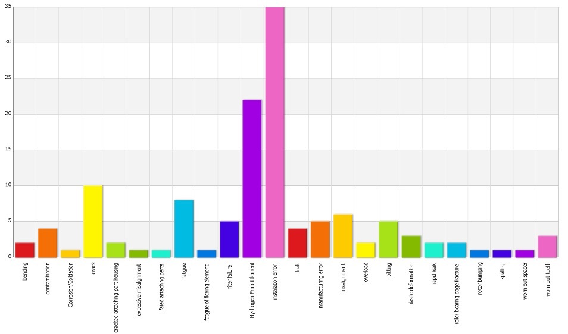
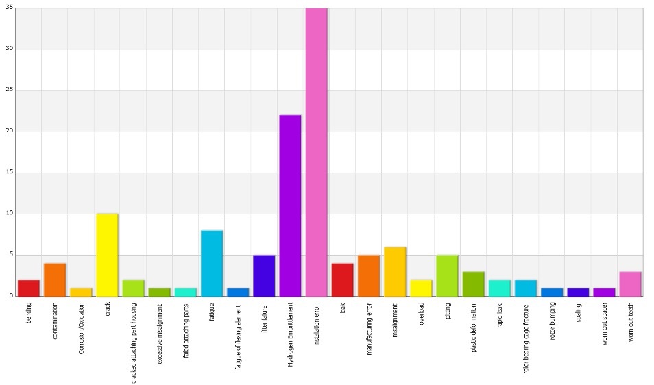

Marenco Swisshelicopter AG
Qualitative Failure Modes & Effects Analysis (FMEA)
The SKYe SH09 helicopter Main Gearbox (MGB), manufactured by Marenco Swisshelicopter AG, is a critical component responsible for safely transmitting power from the engine to the main and tail rotors. Due to its central role in helicopter flight operations, ensuring the MGB's reliability and safety is essential.
A detailed Functional Failure Modes & Effects Analysis (FMEA) was conducted to systematically identify potential failure modes, assess their effects, and determine their detectability and severity. This qualitative analysis followed aerospace industry standards outlined in SAE ARP 4761, aiming to proactively address potential issues early in the design phase.
 The FMEA process involved a thorough examination of each gearbox component, from individual bearings and gears to the rotor mast and lubrication system. Each part was analysed for possible failure modes, such as fatigue, installation errors, misalignments, and contamination, alongside their cascading effects on helicopter performance and safety.
The FMEA process involved a thorough examination of each gearbox component, from individual bearings and gears to the rotor mast and lubrication system. Each part was analysed for possible failure modes, such as fatigue, installation errors, misalignments, and contamination, alongside their cascading effects on helicopter performance and safety.
 Significant attention was given to ensuring that critical parts met stringent reliability requirements, emphasising potential risk areas such as installation errors and material fatigue, notably hydrogen embrittlement. Additionally, extensive use of detection methods including chip detectors, cockpit visual displays, and pilot sensory feedback ensured timely identification and mitigation of issues.

Conclusions drawn from the analysis highlighted the most frequent failure causes, notably installation errors and hydrogen embrittlement, along with their potential impacts on helicopter safety.
This rigorous FMEA process has provided Marenco Swisshelicopter AG with essential insights to enhance the design and safety of the SKYe SH09 helicopter, proactively mitigating risks and ensuring optimal aircraft reliability.
Significant attention was given to ensuring that critical parts met stringent reliability requirements, emphasising potential risk areas such as installation errors and material fatigue, notably hydrogen embrittlement. Additionally, extensive use of detection methods including chip detectors, cockpit visual displays, and pilot sensory feedback ensured timely identification and mitigation of issues.

Conclusions drawn from the analysis highlighted the most frequent failure causes, notably installation errors and hydrogen embrittlement, along with their potential impacts on helicopter safety.
This rigorous FMEA process has provided Marenco Swisshelicopter AG with essential insights to enhance the design and safety of the SKYe SH09 helicopter, proactively mitigating risks and ensuring optimal aircraft reliability.